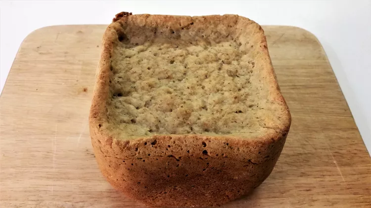

Garlic Bread

Description
This bread is great if you're a garlic lover like me! Sometimes I add even more garlic!
Total time: 3 hrs 10 mins
Ingredients:
- 1 cup warm water (110 degrees F)
- 1 tablespoon butter
- 1 tablespoon dry milk powder
- 1 tablespoon white sugar
- 1 1/2 teaspoon salt
- 1 1/2 tablespoons dried parsley
- 2 teaspoons garlic powder
- 3 cups bread flour
- 2 teaspoons active dry yeast
Steps:
-
Place ingredients in the pan of the bread machine in the order recommended by the manufacturer. Select Basic Bread cycle; press Start.
Go Home